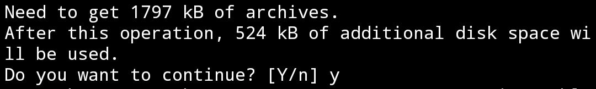
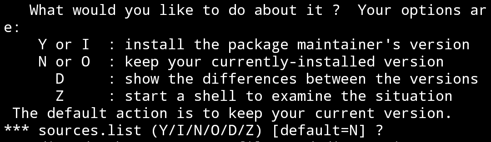
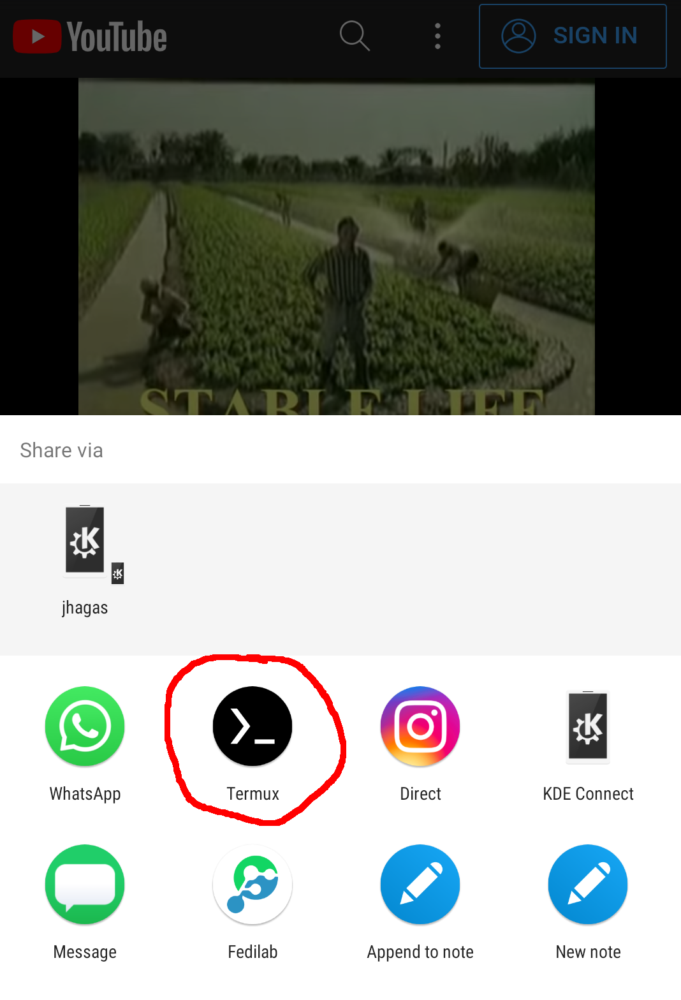

TERMUX UNTUK DOWNLOAD VIDEO DARI YOUTUBE, INSTAGRAM, DLL
MEMANG SEDIKIT AGAK RUMIT, NAMUN MENARIK UNTUK DICOBA
Aplikasi pengunduh YouTube sudah banyak tersedia di Android, namun terkadang aplikasi tersebut dipenuhi oleh banyak iklan dan juga tracker yang mengganggu ketenangan dan privasi digital anda.
Salah satu cara yang bisa dilakukan untuk mengatasi hal ini adalah dengan Termux yang dapat diunduh di Google Play Store. Bagi yang belum pernah tahu Termux, Termux adalah aplikasi yang mengemulasikan terminal atau console GNU/Linux di dalam Android. Termux ini multifungsi, dan bisa melakukan hampir segala hal, termasuk untuk mengunduh video dari internet.
First-time Setup
Silahkan untuk membuka aplikasi Anda. Untuk setup pertama, cukup copy dan paste kode BASH berikut ini ke dalam Termux, lalu tekan enter di keyboard ponsel android anda.
curl -sL https://git.io/Jcuhy -o setup.sh
chmod 777 setup.sh
./setup.shProses akan memakan waktu beberapa menit. Dibutuhkan koneksi internet untuk menjalankan kode instalasi tersebut, pastikan kuota data anda mencukupi (mengunduh file sekitar 70MB), dan juga pastikan ruang penyimpanan anda mencukupi.
Jika anda mempunyai Termux yang fresh-Install Kemungkinan pada saat proses, anda akan disuguhi beberapa dialog CLI. Untuk mengatasi hal tersebut, cukup ketik “y” dan ENTER pada dialog pertama lalu ENTER pada dialog kedua dan ketiga.
Dialog Pertama  Langsung ketik “y” lalu ENTER
Kedua dan Ketiga (sama)  Langsung tap ENTER pada keyboard
Untuk menyimpan video yang akan anda unduh, Termux memerlukan izin kepada penyimpanan Internal Android. Ketika dialog ini muncul, maka silahkan untuk mengetuk “Allow” atau “Izinkan” pada dialog tersebut
Setelah itu tunggu beberapa saat sampai semua proses terselesaikan.
Download Video dari YouTube, atau sumber lainnya
Setelah setup selesai, anda langsung bisa menggunakan Termux untuk mengunduh video, baik dari Instagram, YouTube atau aplikasi-aplikasi lain yang didukung. Cukup dengan mengetuk tombol bagikan lalu pilih Termux

Wrapping Up
Karena kebutuhan akan privasi digital dan perlindungan data pribadi yang semakin meningkat, maka menggunakan aplikasi Open-Source adalah sebuah kebutuhan. Dengan menggunakan pengunduh YouTube Termux ini, anda telah mengamankan sedikit banyak privasi digital anda, dari pada menggunakan aplikasi pihak-ketiga yang banyak iklannya.
With a great power, comes a great Responsibility
Termux memang powerfull namun, anda harus tetap menghargai hak cipta pembuat konten yang anda unduh. Silahkan simpan video tersebut untuk konsumsi pribadi.